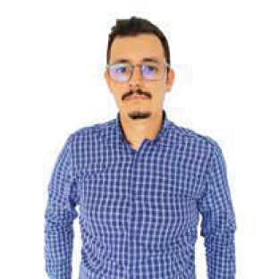

Juan Manuel Vargas
Contact
Software
Python
javascript
HTML
CSS
Django
F322lask
NodeJS
Bootstrap
react
Express
Postgress
MySQL
MongoDB
Slack
Jira
Trello
Git
Github
Skills
Team work
Self Critical
Analitic
Logic
Responsable
Punctual
Strategic
Tactical